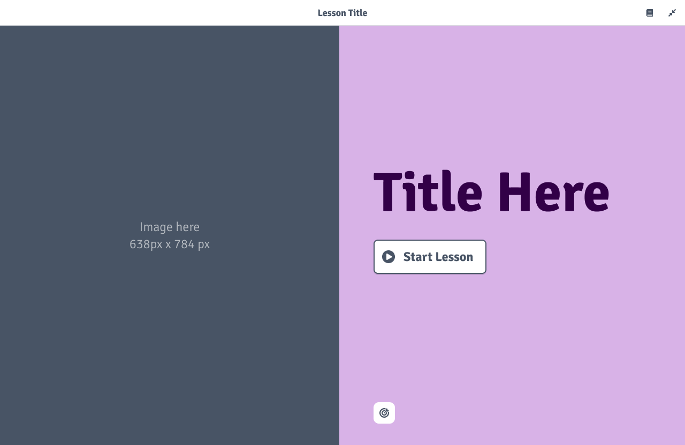
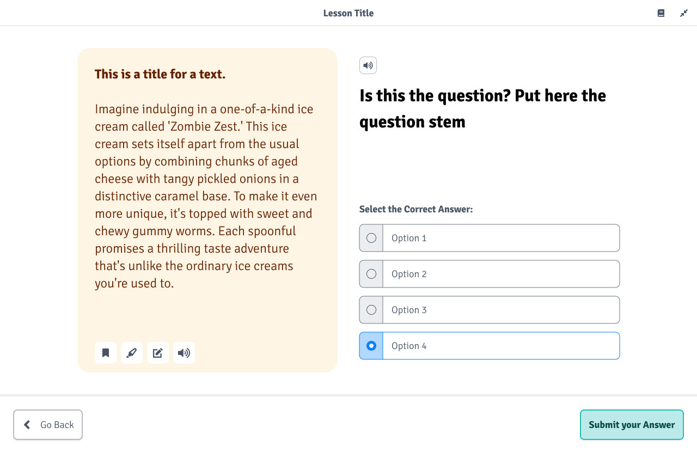
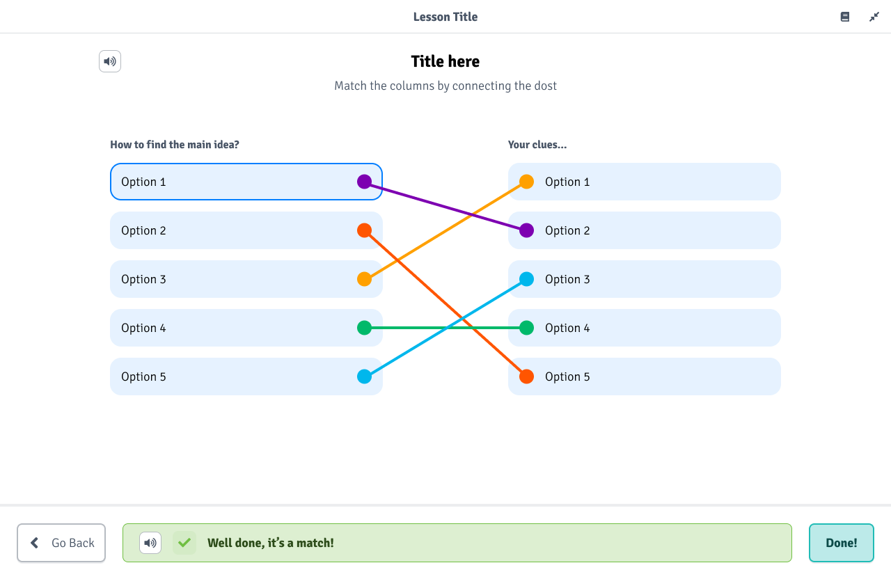
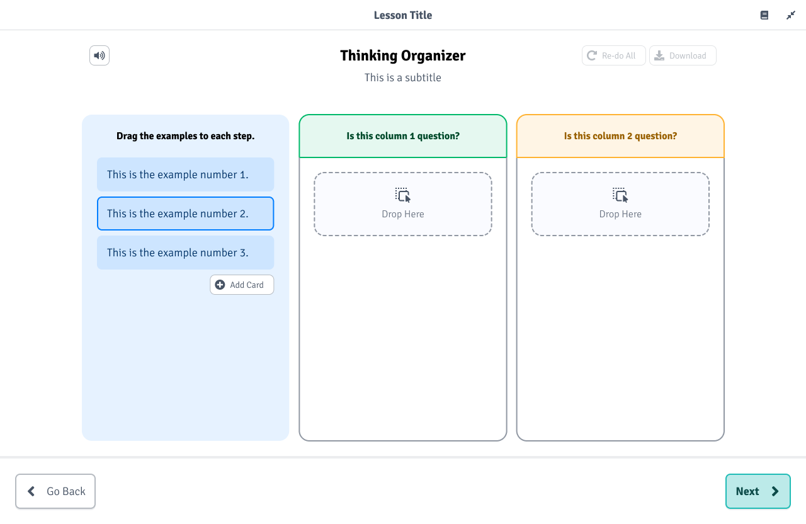
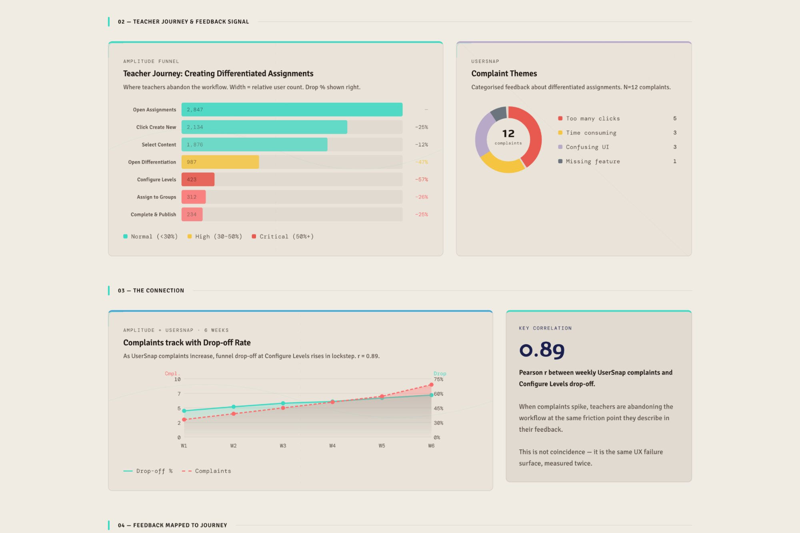

Design System & Product Operations
Two sides of the same problem: building the infrastructure that lets a design organisation operate at scale. One reduced 60 templates to 22. The other connected the data nobody was connecting.
The design system: cutting was the real work
When I arrived at Alef Education, the platform had accumulated over 60 templates with no governance. Different designers made different decisions for the same components. Spacing was inconsistent. Colour usage varied. There was no documentation. Production was slow because every new piece of content required decisions that should have been made once and codified.
I audited the full template library and found the expected mess: duplicated components serving the same interaction pattern, conflicting visual treatments, and no clear ownership. The solution was not to build more. It was to cut.
I reduced the library to 22 reusable components, built a scalable pattern library, and wrote the governance rules to keep it clean. Each of the 22 components serves a distinct learning interaction: intro slides, comprehension questions, matching exercises, assessment variants, and so on.




Four of the 22 consolidated templates. Before consolidation, over 60 templates covered the same ground with inconsistent patterns, no documentation, and no governance.
The consolidation was not a design exercise. It was an organisational negotiation. Every redundant template had an owner who believed theirs was necessary. The discipline required was in cutting, not creating. Getting the team to trust the reduced set took workshops, shared ownership of the documentation, and visible evidence that production got faster.
Adoption reached 95% within six months. Production cycles dropped by 40%. Annual savings from the consolidation and associated vendor management totalled £200K.
Product operations: connecting data nobody was connecting
Product decisions were being made without structured user feedback. Qualitative data from Usersnap, capturing what users said and felt, sat in one system. Quantitative data from Amplitude, showing what users actually did, sat in another. Nobody was connecting the two. The result was a familiar pattern: anecdotal feedback driving roadmap decisions, with no way to validate whether complaints reflected widespread problems or individual frustrations.
I built a feedback analytics dashboard that linked qualitative feedback directly to quantitative usage patterns through shared user identifiers. The dashboard connected Usersnap submissions to Amplitude behavioural data, allowing the team to see, for the first time, whether a user complaint correlated with actual usage drop-off or was an isolated case.
I built the entire system myself using Claude Code, including the data pipeline, the SVG chart rendering, and the correlation analysis. The dashboard used CSV data dumps rather than live API connections. This was a deliberate choice: it meant we could build and validate the concept without waiting for engineering resources. The same AI-first approach I was teaching the team, I was using to ship the tooling.
When my colleague Hari demoed the dashboard internally, the response was immediate. Leadership could see how user complaints mapped to actual usage patterns. The connection turned anecdotal feedback into actionable evidence. What had been gut-feel prioritisation became data-informed sprint planning.
Decision-making cycles dropped from 10 days to 3. Feedback now directly informs sprint planning. The tool I built as a proof of concept became a permanent part of how the organisation works.

Combined results
£200K annual savings through design system consolidation and vendor management.
40% faster production cycles through the consolidated template library.
95% design system adoption within six months.
70% faster decision-making through the feedback analytics framework (10 days to 3).
Feedback dashboard adopted as a permanent product operations tool.
Don brings a global design perspective, blending diverse insights that enhance products and resonate with users worldwide. Don also led the charge in integrating AI into the design process, keeping the team innovative and efficient.Philip ChesneyFormer Product Manager, Alef Education
What I learned
These two projects taught me that the most impactful design leadership is often invisible. A consolidated design system does not make for a dramatic story. Neither does a feedback dashboard built on CSV dumps. But together they form the operational backbone that allows a team of sixteen people to produce consistent, high-quality work across twelve markets without depending on any single person.
The design system taught me that governance is harder than creation. Building 22 beautiful components is the easy part. Getting an organisation to trust them, use them, and stop making exceptions is where the real work happens.
The feedback dashboard taught me that the most valuable data connection is often the simplest one. Linking Usersnap to Amplitude through shared user IDs was not technically sophisticated. But nobody had done it. The gap was not in capability. It was in someone deciding it mattered enough to build, and having the AI fluency to ship it without waiting for a dev team.